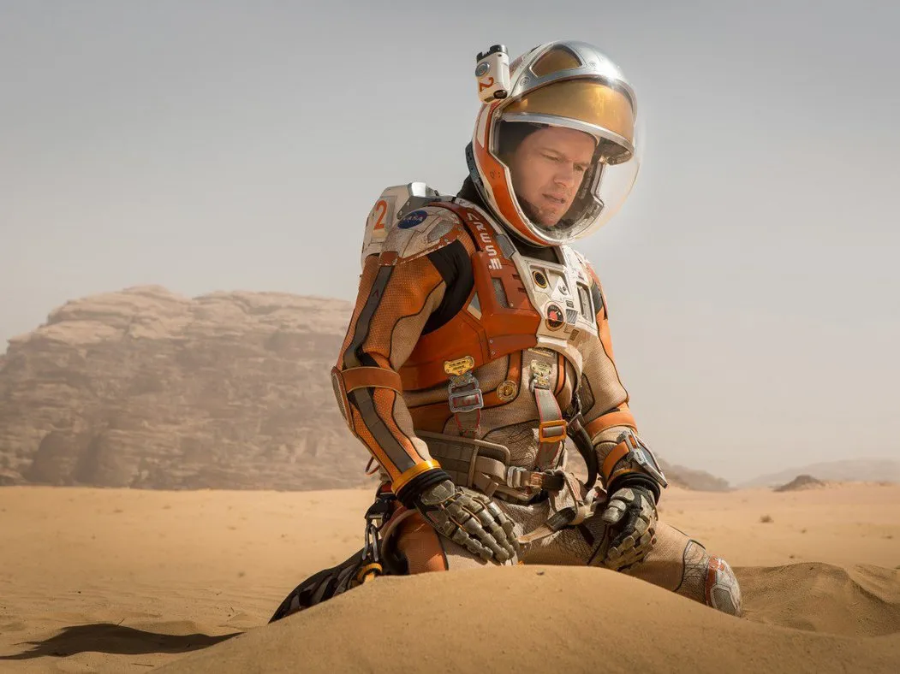
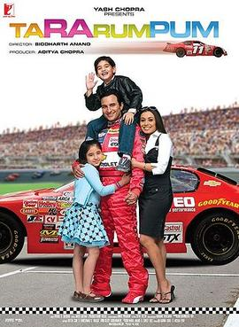

The film tells the story of a group of villagers who challenge the oppressive British rulers to a game of cricket as a means to abolish their high taxes.

It is an exhilarating tale of survival and resilience as an astronaut, stranded alone on Mars, fights against insurmountable odds to stay alive and make it back home.
It is a heartwarming film that follows the journey of a determined racing driver and his family as they face challenges, setbacks, and triumphs in their pursuit of happiness and success.
